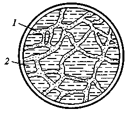
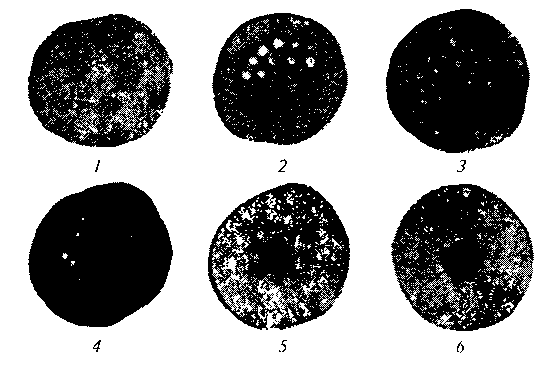
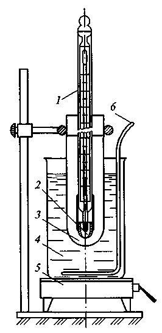
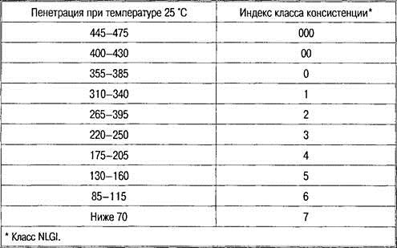
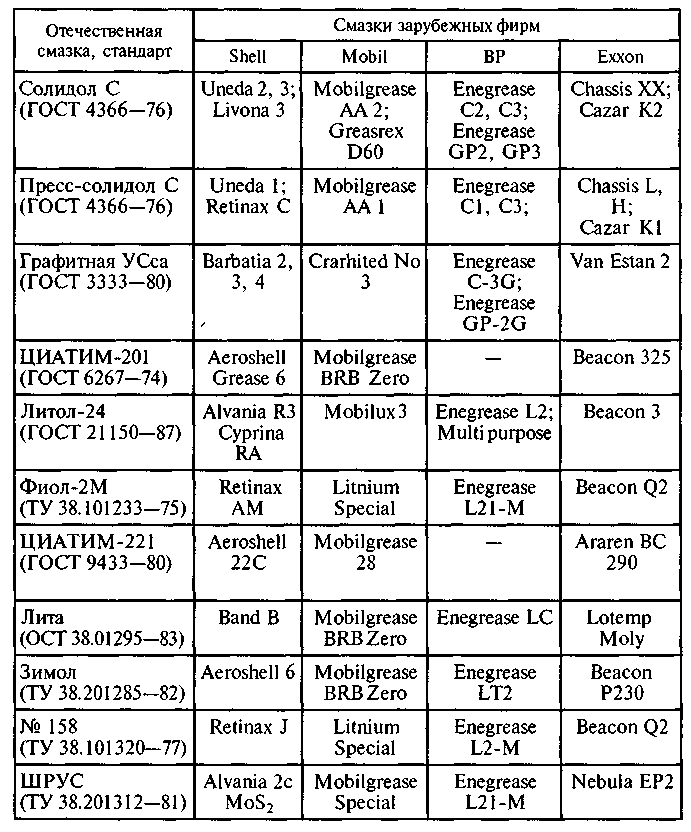

Тема 9
Пластичные смазки
Пластичные
смазки занимают промежуточное положение между твердыми смазочными материалами
и маслами. В простейшем случае их можно рассматривать как двухкомпонентные
системы, состоящие из масла (дисперсионной среды) и загустителя (дисперсионной
фазы).
Дисперсная
фаза (5... 25 %) образует в смазках трехмерный структурный каркас, в ячейках
которого удерживается масло (рис. 1). Поэтому при небольших нагрузках смазки
ведут себя как твердые тела, а при критических нагрузках, превышающих
прочность структурного каркаса (обычно 50...200 Па), они текут подобно маслам.
Дисперсионная
среда и дисперсионная фаза определяют основные эксплуатационные свойства
смазок. Но кроме этих двух компонентов в смазках также может присутствовать и
какой-либо технологический компонент. Например, в солидолах таким компонентом
является вода — стабилизатор структуры, а в смазках на природных жирах —
глицерин или высокомолекулярные спирты. В мыльных смазках также практически
всегда присутствуют свободные кислоты и щелочи.
Для
регулирования процессов структурообразования и улучшения эксплуатационных
характеристик смазок в их состав вводят присадки различного действия и твердые
добавки — наполнители.
Основными
преимуществами смазок по сравнению с маслами являются: способность удерживаться
на наклонных и вертикальных поверхностях, не вытекать и не выдавливаться из
узлов под действием значительных нагрузок; лучшие смазочные (противоизносные и
противозадирочные), защитные (металлов от коррозии) и герметизационные
свойства; меньшая зависимость вязкости от температуры; более эффективная работа
в жестких условиях эксплуатации; экономичность.

Рис.1. Структура консистентной смазки:
1 — каркас, образованный дисперсной фазой смазки; 2
— смазочное масло
Обычно
пластичные смазки принято классифицировать по природе загустителя, так как
именно это в наибольшей степени определяет их свойства и возможные области применения.
По применяемым загустителям смазки делят на четыре основные группы: мыльные, углеводородные,
неорганические и органические.
По
объему производства пластичные смазки уступают смазочным маслам, составляя
всего несколько процентов в общем балансе производства смазочных материалов,
что объясняется малым их расходом. Так, во многих механизмах количество
смазки, вводимой в узел трения, исчисляется в граммах, а сроки смены смазок
составляют в ряде узлов несколько тысяч часов работы, что нередко соответствует
сроку службы механизма.
На
рис. 2 показаны пятна различных пластичных смазок.

Рис. 2. Пятна различных пластичных смазок:
1 — технического вазелина; 2 — жирового
солидола; 3 — синтетического солидола; 4 —
графитной смазки; 5 — консталина; 6 — смазки 1-13
Для
производства смазок используются в основном индустриальные (ГОСТ 20799—88),
трансформаторные (ГОСТ 982—80) и веретенные марки АУ (ТУ 38.1011232—89) масла.
Назначение,
состав и получение пластичных смазок
Пластичные смазки предназначены для
применения в узлах трения, где масло не удерживается или невозможно обеспечить
непрерывное пополнение его запаса.
Пластичные
(консистентные) смазки — особый класс смазочных материалов, которые получают
загущением смазочных масел (дисперсионная среда) твердыми веществами
(дисперсионная фаза). В этой системе твердая фаза (загуститель) образует
структурный каркас, который удерживает в своих ячейках жидкую дисперсионную
среду. В качестве такого структурного каркаса используются жирные соли мягких
металлов. Но могут применяться и мыло, парафин или пигмент. Название металла,
как правило, переносят на саму смазку — натриевая, кальциевая, литиевая,
бариевая, магниевая, цинковая, стронциевая и т. д.
Если на долю дисперсионной среды
(масло) приходится основная масса (70—95 %), то дисперсионная фаза
(загуститель) составляет 5—30 %.
При заданных условиях такая смазка
находится в пластичном мазеобразном состоянии. При достижении определенной
температуры предела пластичная смазка плавится и расслаивается.
Пластичные смазки не стекают с
наклонных и вертикальных поверхностей и удерживаются в узлах трения при
действии высоких нагрузок и инерционных сил.
Пластичные смазки нашли широкое
применение в качестве защитных, герметизирующих, антифрикционных и
противоизносных материалов.
На долю дисперсной среды в пластичных
смазках приходится 70—95 % массы, как правило, это минеральные масла. Для
получения большего интервала рабочих температур используют такие синтетические
жидкости, как силиконы и диэфиры.
Кроме дисперсионной среды и
загустителя смазки могут содержать стабилизаторы и модификаторы коллоидной
структуры, присадки и наполнители для придания или улучшения функциональных
свойств, а также красители.
Действие смазки гораздо сложнее, чем
масла. Поэтому для грамотного выбора того или иного состава необходимо знать
его свойства.
Эксплуатационные
свойства пластичных смазок
Температура
каплепадения
В пластичной смазке при
нагревании происходит необратимый процесс разрушения кристаллического каркаса,
и смазка становится текучей. Переход из пластичного состояния в жидкое условно
выражают температурой каплепадения, т. е. температурой, при которой из
стандартного прибора при нагревании падает первая капля смазки. Температура
каплепадения смазок зависит от вида загустителя и его концентрации.
По температуре
каплепадения смазки делят на тугоплавкие (Т), среднеплавкие (С) и низкоплавкие
(Н). Тугоплавкие смазки имеют температуру каплепадения выше 100 °С;
низкоплавкие — до 65 °С. Во избежание вытекания смазки из узла трения
температура каплепадения должна превышать температуру рабочего узла на 15—20
°С.

Рис.
1. Прибор для определения температуры каплепадения смазки:
1 — термометр с гильзой; 2 — капсюль для испытуемой
смазки; 3 — пробирка-муфта; 4— стакан с водой
или глицерином; 5 — электроплитка; 6 — мешалка
Механические
свойства
Механические свойства
смазок характеризуются пределом прочности смазок при сдвиге и пенетрацией.
Предел прочности — это
минимальное удельное напряжение, которое нужно приложить к смазке, чтобы
изменить ее форму и сдвинуть один слой смазки относительно другого. При меньших
нагрузках пластичные смазки сохраняют свою внутреннюю структуру и упруго
деформируются подобно твердым телам, а при больших давлениях структура
разрушается, и смазка ведет себя как вязкая жидкость.
Определяют
предел прочности с помощью прибора, называемого пластомером. Предел прочности
характеризует способность смазок не вытекать из узлов трения, противостоять
сбросу с движущихся деталей (например, подшипников) под влиянием инерционных
сил и удерживаться на наклонных и вертикальных поверхностях не стекая и не
сползая. Когда напряжение сдвига превышает предел прочности, смазка начинает
течь.
Предел прочности зависит
от температуры смазки — с повышением температуры он уменьшается. Этот
показатель характеризует способность смазки удерживаться в узлах трения,
противостоять сбросу под влиянием инерционных сил. Для рабочих температур
предел прочности не должен быть ниже 300—500 Па.
Пенетрация — условный
показатель механических свойств смазок, численно равный глубине погружения в
них конуса стандартного прибора за 5 с. Пенетрация — показатель условный, не
имеющий физического смысла, и не определяет поведение смазок в эксплуатации. В
то же время, так как этот показатель быстро определяется, им пользуются в
производственных условиях для оценки идентичности рецептуры и соблюдения
технологии изготовления смазок.
Число пенетрации
характеризует густоту смазок и колеблется от 170 до 420.
Эффективная
вязкость
Вязкость смазки при одной
и той же температуре может иметь различное значение, которое зависит от
скорости перемещения слоев относительно друг друга. С увеличением скорости
перемещения вязкость уменьшается, так как частицы загустителя ориентируются по
ходу движения и оказывают меньшее сопротивление скольжению. Увеличение
концентрации и степени дисперсности загустителя приводят к увеличению вязкости
смазки. Вязкость смазки зависит от вязкости дисперсной среды и технологии приготовления
смазки.
Вязкость смазки при
определенной температуре и скорости перемещения называется эффективной
вязкостью и рассчитывается по формуле
ηэф = τ/D
где τ— напряжение сдвига;
D — градиент скорости сдвига.
Показатель вязкости имеет
большое практическое значение. Он определяет возможность подачи смазок и
заправки в узлы трения с помощью различных заправочных устройств. Вязкость
смазки определяет также расход энергии на ее перекачку при перемещении
смазанных деталей.
Коллоидная стабильность
Коллоидная стабильность —
это способность смазки сопротивляться расслаиванию.
Коллоидная стабильность
зависит от структурного каркаса смазки, который характеризуется размерами,
формой и прочностью связей структурных элементов. Следовательно, на коллоидную
стабильность оказывает влияние вязкость дисперсной среды: чем выше вязкость
масла, тем труднее ему вытекать.
Выделение масла из смазки
увеличивается с повышением температуры, увеличением давления под действием
центробежных сил. Сильное выделение масла не допустимо, так как смазка может
ухудшить или потерять полностью свои смазочные свойства. Для оценки коллоидной
стабильности используют различные приборы, способные выпрессовывать масло под
действием нагрузки.
Водостойкость
Водостойкость — это
способность смазки противостоять размыву водой. Растворимость смазки в воде
зависит от природы загустителя. Наилучшей водостойкостью обладают парафиновые,
кальциевые и литиевые смазки. Натриевые и калиевые — водорастворимые смазки.
Классификация,
применение и обозначения пластичных смазок
Пластичные смазки
подразделяются на четыре группы:
— антифрикционные — для
снижения износа и трения скольжения сопрягаемых деталей;
— консервационные — для
предотвращения коррозии при хранении, транспортировке и эксплуатации;
— канатные — для
предотвращения коррозии и износа стальных канатов;
— уплотнительные — для
герметизации зазоров, облегчения сборки и разборки арматуры, манжет, резьбовых,
разъемных и любых подвижных соединений.
Антифрикционные смазки
являются самой многочисленной группой пластических смазок и делятся на
следующие подгруппы:
С — общего назначения;
О — для
повышенной температуры;
М — многоцелевые;
Ж — термостойкие (узлы
трения с рабочей температурой >150 °С);
Н — низкостойкие (узлы
трения с рабочей температурой <40 °С);
И — противозадирные и
противоизносные;
X — химически стойкие;
П — приборные;
Т — редукторные
(трансмиссионные);
Д — приработочные пасты;
У —
узкоспециализированные (отраслевые).
Консервационные смазки
обозначаются буквой «З», канатные — «К».
Уплотнительные смазки
имеют три подгруппы:
А — арматурные (для
манжет);
Р — резьбовые;
В — вакуумные (для
уплотнений в вакуумных системах).
В зависимости от
применения смазки делят на общего назначения, многоцелевые и
специализированные.
Смазки
общего назначения
Кальциевые смазки имеют
общее название — солидолы. Это самые массовые и дешевые антифрикционные смазки,
относятся к среднеплавким. Кальциевые смазки выпускаются следующих марок:
солидол Ж, прессолидол Ж, солидол С или прессолидол С.
Солидол С работоспособен
при температуре от —20 до 65 °С. Прессолидол С — от —30 до 50 °С.
Натриевые и
натриево-кальциевые смазки работают в более широком интервале температур (от
—30 до 110 °С) и применяются главным образом в подшипниках качения.
Например, смазка
автомобильная ЯНЗ-2 почти нерастворима в воде, но при длительном применении во
влажной среде эмульгируется. Вытесняется универсальной смазкой Литол-24.
Универсальные смазки
водостойки и работоспособны в широком интервале температур, скоростей и
нагрузок. Обладают хорошими консервационными свойствами. Загустителями для них
служат литиевые мыла.
Литол-24 — можно
использовать в качестве единой автомобильной смазки, она работоспособна при
температуре от —40 до 130 °С.
Фиол-1, Фиол-2, Фиол-3 —
смазки аналогичны Литол-24, но более мягкие, лучше удерживаются в узлах трения.
Известные во всем мире
бренды Castrol и BP теперь в ассортименте компании "Алессио-Авто".
Моторные масла, тормозные жидкости, пластические смазки, охлаждающие жидкости,
трансмиссионные масла, смазки, специальные продукты. Компания может
организовать поставки
автозапчастей оптом непосредственно с заводов-изготовителей.
Специализированные
смазки
К специализированным
смазкам относятся около 20 марок смазок разного качества. Они наиболее
эффективно используются в качестве несменяемых и непополняемых смазок в
процессе эксплуатации.
Графитная — применяется
преимущественно в открытых узлах.
AM карданная — для
карданных шарниров равных угловых скоростей (Тракта, Рцеппа, Вейса) грузовых
автомобилей, склонна к вытеканию из узлов.
Шрус-4 — для шарниров
равных угловых скоростей (типа Бирфильд) легковых автомобилей; работоспособна
при температуре от —40 до 130 °С, водостойка, имеет высокие противозадирные и
противоизносные свойства.
ШРБ-4 — для
герметизированных шарниров подвесок и рулевого управления, диапазон рабочих
температур от —40 до 130 °С.
ЛСЦ-15 — применяется в
шлицевых соединениях, шарнирах и осях приводов педалей, стеклоподъемниках;
обладает высокой водостойкостью, адгезией (прилипаемостью) к металлам, хорошими
консервационными свойствами.
Термостойкие
смазки
Предел работоспособности
термостойких смазок — от 150 до 250 °С.
Униол-3М — водостоек,
обладает хорошей коллоидной стабильностью и противозадирными свойствами.
ЦИАТИМ-221 — можно
применять при температурах от —60 до 150 °С, химически стабильна к резине и
полимерным материалам.
Морозостойкие
смазки
Морозостойкие смазки
работоспособны во всех узлах трения в условиях Крайнего Севера и Арктики.
Зимол — морозостойкий
аналог смазки Литол-24.
Лита — многоцелевая
морозостойкая рабоче-консервационная смазка, водостойкая.
ЦИАТИМ-201 — основная
морозостойкая смазка для автомобилей, обладает посредственными противозадирными
свойствами, при хранении выделяет масло. Зимол и Лита, уступая ей по
морозостойкости, превосходят по противоизносным свойствам, работоспособности
при повышенных температурах.
В соответствии с
классификацией API в зависимости от величины пенетрации смазки разделяют на
классы (табл. 1).
Таблица 1. Классы смазок
по API

В табл. 2. приведены
основные показатели пластических смазок и их заменители.
В
настоящее время для легковых и грузовых автомобилей всех марок успешно
используют многоцелевую смазку Литол-24 (ГОСТ21150—87). Эта смазка допущена к
применению во всех узлах трения автомашин, а также тракторов и инженерных
машин вместо смазок общего назначения.
В
табл. 3 приведены сведения о соответствии основных марок отечественных и
зарубежных смазок.
Таблица 3 Соответствие марок отечественных и зарубежных пластичных смазок

Контрольные
вопросы
1. Как получают пластичные смазки?
2. Перечислите эксплуатационные
свойства пластичных смазок.
3. Что такое температура
каплепадения?
4. Что понимают под пенетрацией?
5. Расскажите о значении вязкости
смазки.
6. Как классифицируются пластичные
смазки?
7. Назовите марки смазок общего
назначения, универсальных и специализированных смазок.